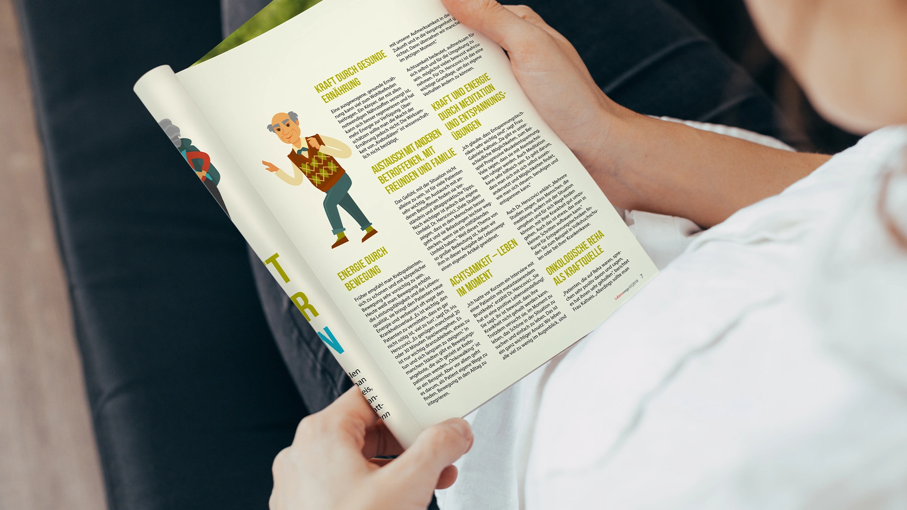
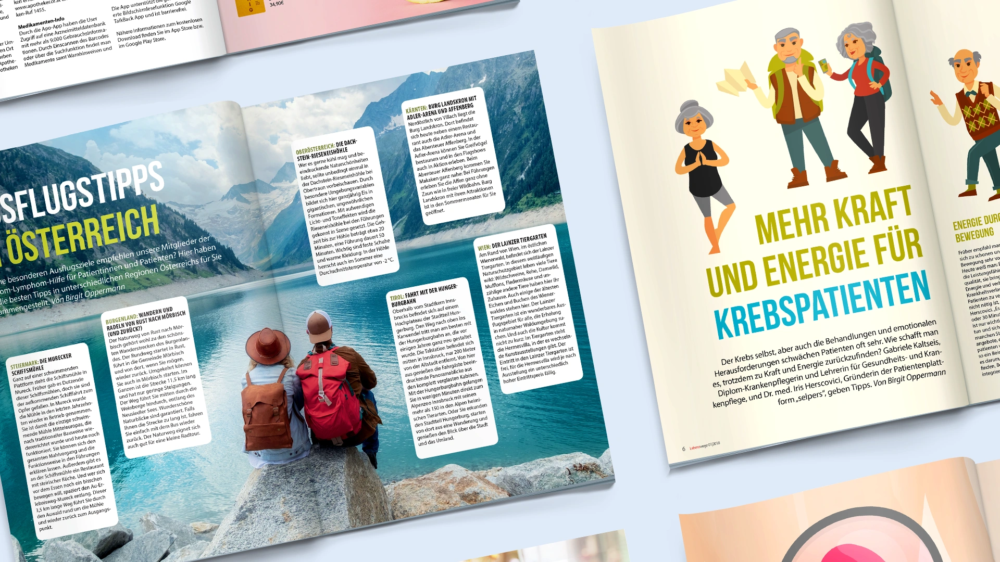
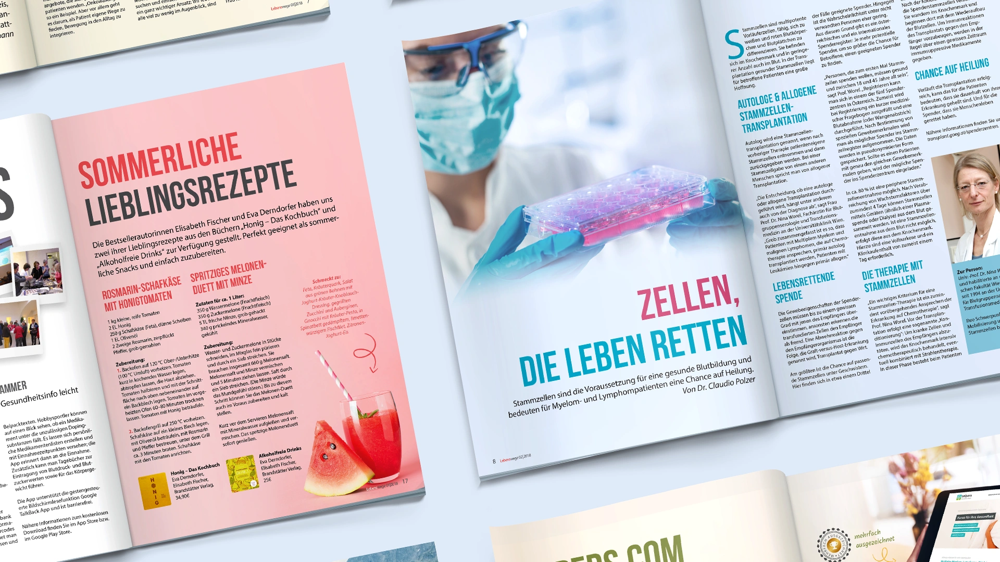

The Challenge
Lebenswege is the member magazine of Myelom- und Lymphomhilfe Österreich, providing patients and their families with news from medicine and therapy, personal stories, events and practical information. Across several issues, the challenge was always the same: however serious the subject matter, the magazine should feel hopeful, approachable and full of life.
I shaped each issue's layout and imagery to feel warm and inviting — using colour and a clear structure to make serious medical content approachable and easy to read. The goal was creating a magazine that people genuinely want to pick up and read.

